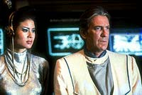
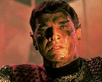
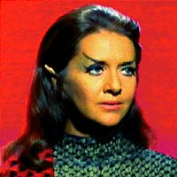
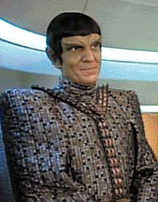
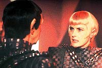
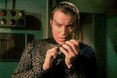

|
Que
venham os Romulanos!
 At
que haja outra srie que fale da histria da Federao no
"presente", os filmes de Jornada sero os responsveis
por contar o desenvolvimento da situao a partir da chegada da
Voyager Terra e o possvel incio da despedida dos aventuras da
Nova Gerao. Esta uma situao especial e indita no
universo de criado por Gene Roddenberry. O que est para acontecer
daqui para frente, depende, por enquanto, do que veremos na tela
grande. At
que haja outra srie que fale da histria da Federao no
"presente", os filmes de Jornada sero os responsveis
por contar o desenvolvimento da situao a partir da chegada da
Voyager Terra e o possvel incio da despedida dos aventuras da
Nova Gerao. Esta uma situao especial e indita no
universo de criado por Gene Roddenberry. O que est para acontecer
daqui para frente, depende, por enquanto, do que veremos na tela
grande.
Os Romulanos faro parte do prximo filme. At que enfim!
Poderemos ver como este povo extremamente inteligente, ardiloso e
orgulhoso de si mesmo vai entrar em cena na linha de frente de mais
uma jornada. No cinema, eles foram mostrados de maneira secundria
na trama. Alm da especulao, quase totalmente aceita, de que a
tenente Saavik meio Romulana, a participao de bons
personagens deixou a desejar.
 A
representante do Imprio Romulano Caithlim Dar (de "Jornada
nas Estrelas V - A ltima Fronteira") o melhor exemplo
at agora. Bonitinha e sensual, s no mais estonteante que a
auxiliar do comandante Klingon que tenta interceptar a Enterprise.
No final da histria, a Romulana se entende com o representante da
Federao. Pelo menos para eles, encontrar o den, ou Vorta Vor,
no deve ter sido muito difcil...
Em "Jornada nas Estrelas VI - A Terra Desconhecida",
o embaixador Romulano est em Paris, no gabinete do presidente da
Federao junto com Sarek, o embaixador Klingon e os oficiais do
Alto Comando da Frota Estelar. Ele ajuda a pressionar para que no
haja interferncia quanto ao julgamento de Kirk e McCoy,
determinado pelos Klingons. No final do filme, enquanto muitos batem
palmas para a tripulao da Enterprise e para o Imprio Klingon,
que acaba de selar o acordo de paz, s o embaixador Romulano est
cabisbaixo porque seu povo perdeu a oportunidade de jogar com o
conflito entre a Federao e os Klingons. As conseqncias
disso, foram apresentadas depois na Nova Gerao com o
ataque Romulano a Kithomer.
 Na
Sria Clssica, os Romulanos aparecem em poucos episdios,
como "Balance of Terror" e "The Enterprise
Incident". Mark Lenard apareceu magistralmente pela
primeira vez fazendo o comandante da nave Romulana (que na primeira
dublagem brasileira, se chamava nave Rmula). A dignidade de dois
homens que se enfrentam numa batalha difcil de ser evitada ao
longo da Zona Neutra e o alto custo de uma guerra mostrada, junto
com o parentesco Vulcano-Romulano, que quase comprometeu Spock.
 Outra
grande figura foi a comandante Romulana que se apaixonou pelo
Vulcano e foi vtima de sua trama com Kirk para roubarem o
dispositivo de camuflagem. Nessa, at Kirk se disfara de Romulano
para proteger os interesses da Federao, como Picard far anos
depois.
Na Nova Gerao eles foram mais utilizados e marcaram a sua
participao em muitos episdios. Eles reaparecem com o temor do
ataque a seus postos, provavelmente pelos, ento desconhecidos,
Borgs, em "The Neutral Zone".
 O
comandante Tomalak, interpretado por Andreas Katsulas (o G'Kar, da
srie "Babylon 5") apareceu em "The Enemy",
quando Worf se recusa a fazer uma transfuso de sangue para salvar
um membro da tripulao Romulana resgatado em Galordorn Core. Ele
volta em "The Defector", em meio a uma tentativa de
um almirante Romulano de tentar evitar um ataque surpresa
Federao.
Entretanto, os meus preferidos que apresentam a tpica figura
Romulana so Sela e Neral. Ambos estavam presentes na articulao
para deter o plano de unificao Vulcano-Romulana arquitetado por
Spock em "Unification". Sela j tinha dado o ar de
sua graa antes, em "Redemption", onde ficamos
sabendo que ela filha da tenente Tasha Yar com um Romulano,
depois dela ter voltado ao passado a bordo da Enterprise-C.
 Sela
estava tambm anteriormente em "The Mind's Eye",
numa articulao pirata para ajudar a famlia Duras na guerra
civil Klingon, quando tentaram reprogramar a mente de La Forge para
assassinar o governador Klingon. Gente boa tambm a
subcomandante Toreth, da nave de guerra Khazara, participando em "Face
of the Enemy". Ela confronta a conselheira Troi,
disfarada de membro do Tal Shiar, o servio Romulano de
inteligncia.
Veremos se algum membro do Imprio Romulano que aparecer no cinema
estar altura desses personagens, ou eles continuaro a
participar de forma marginal, fazendo uma perguntinha aqui ou uma
afirmaozinha ali.
 Pelo
que parece, as expectativas so boas. Assim, ns todos poderemos
comemorar a compensao de uma falta bastante sentida no universo
de Jornada. E, claro, no vai falta a boa e velha cerveja
Romulana pra todo mundo.
Cludio
Silveira escreve regularmente sobre os filmes com
exclusividade para o Trek Brasilis
|